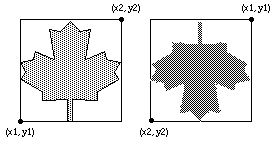

Draw.FillMapleLeaf (x1, y1, x2, y2, Color : int)
The Draw.FillMapleLeaf procedure is used to draw a filled maple leaf on the screen bounded by a rectangle with bottom left and top right corners of (x1, y1) to (x2, y2) and filled using the specified Color. To get a maple leaf outlined in a different color, use Draw.FillMapleLeaf with the Color parameter set to the fill color and then call Draw.MapleLeaf with the Color parameter set to the border color. If y1 is greater than y2, then the mapleleaf is drawn upside down.

This program will draw two maple leaves beside each other. The first will be outlined in black and filled in brightred. The second maple leaf will be upside down and both filled and outlined in green.
View.Set ("graphics")
Draw.FillMapleLeaf (0, 0, 100, 100, brightred)
Draw.MapleLeaf (0, 0, 100, 100, black)
Draw.FillMapleLeaf (150, 100, 250, 0, green)
The Draw.FillMapleLeaf procedure is useful for drawing the Canadian flag.
The screen should be in a "graphics" mode. See the View.Set procedure for details. If the screen is not in a "graphics" mode, it will automatically be set to "graphics" mode.
Exported qualified.
This means that you can only call the function by calling Draw.FillMapleLeaf, not by calling FillMapleLeaf.
view_set.html, maxx.html, maxy.html and the various procedures in the drawmodule.html unit.